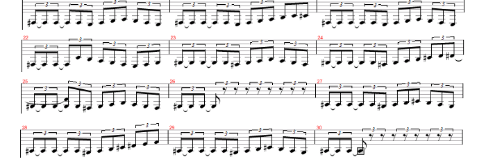

The advanced tutorial focuses on how to make triplets and tied notes in 8-Beat.
The following song has been written in standard sheet music form, and translated into 8-Beat notation. It should serve as an example of how to translate triplets and tied notes into 8-Beat notation.
Blackmail the Universe by Megadeth
# Song: Blackmail the Universe
# Artist: Megadeth
# Translated to 8-Beat by Jacob Lacey
# (Transposed up an octave to help audibility)
tempo = 174
octave = 3
duration = 12
F# 12+12; F# 12+12; F#; E; F#; G; A; G; F#; E;
F# 12+12; F# 12+12; F#; E; F#; G; A; B; +; C; C#; -;
F# 12+12; F# 12+12; F#; E; F#; G; A; G; F#; E;
F# 12+12; F# 12+12; +; C; -; B; A; G; F#; E; F#; G;
G# 12+12; G# 12+12; G#; F#; G#; A; B; A; G#; F#;
G# 12+12; G# 12+12; G#; F#; G#; A; B; +; C#; -; D; D#;
G# 12+12; G# 12+12; G#; F#; G#; A; B; A; G#; F#;
G# 12+12; G# 12+12; R 6; R 2;
A# 12+12; A# 12+12; A#; G#; A#; B; +; C#; -; B; A#; G#;
A# 12+12; A# 12+12; A#; G#; A#; B; +; C#; D#; E; F; -;
A# 12+12; A# 12+12; A#; G#; A#; B; +; C#; -; B; A#; G#;
A# 12+12; A# 12+12; R 6; R 2
Tuplet note values are calculated as follows: (note duration) * (tuplet / 4) So, for example:
- An eighth note quadruplet would be 8 * (4/4) = 8.
- A sixteenth note quintuplet would be 16 * (5/4) = 20.
- A quarter note triplet would be 4 * (6/4) = 6.
Notice the last one? Triplets and sextuplets are synonymous, but sextuplets must be used for the formula to make sense. If this is confusing, just remember that for triplets you add half. As in, a quarter note triplet would be 4 + 4(1/2) = 6.
For tied notes, the notation is even easier. Simply join multiple note length
values with plus signs. For example, the beginning of this music is
F# 12+12. As shown above, 12 represents an
eight note triplet, so this is a tied pair of two eight note triplets.
Similarly, C 4+8+16 would represent a note whose
duration is that of a quarter note, eighth note, and sixteenth note combined.
Feel like messing around? Then take the code above and modify the tempo and octave settings. Play the file with these new settings for a bucket of laughs at how silly things sound in the wrong octave or at the wrong tempo (or both!).